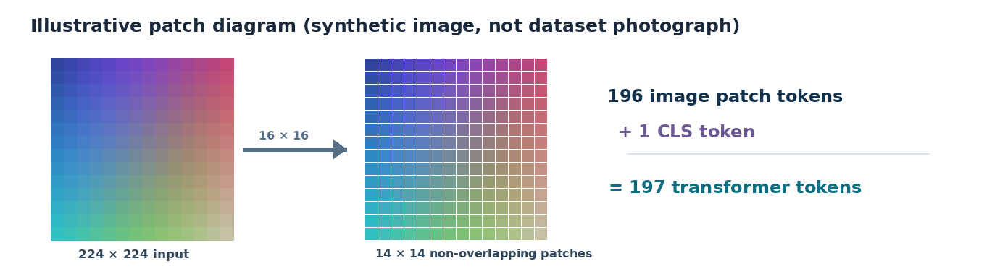
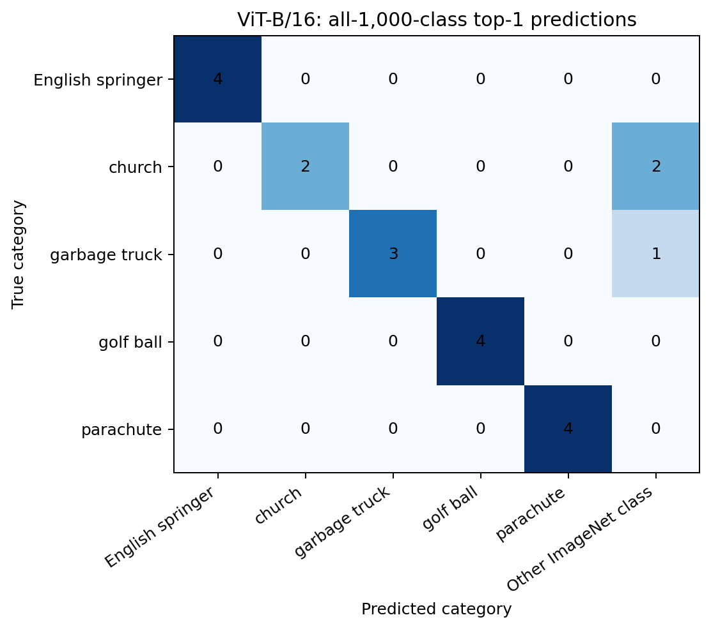
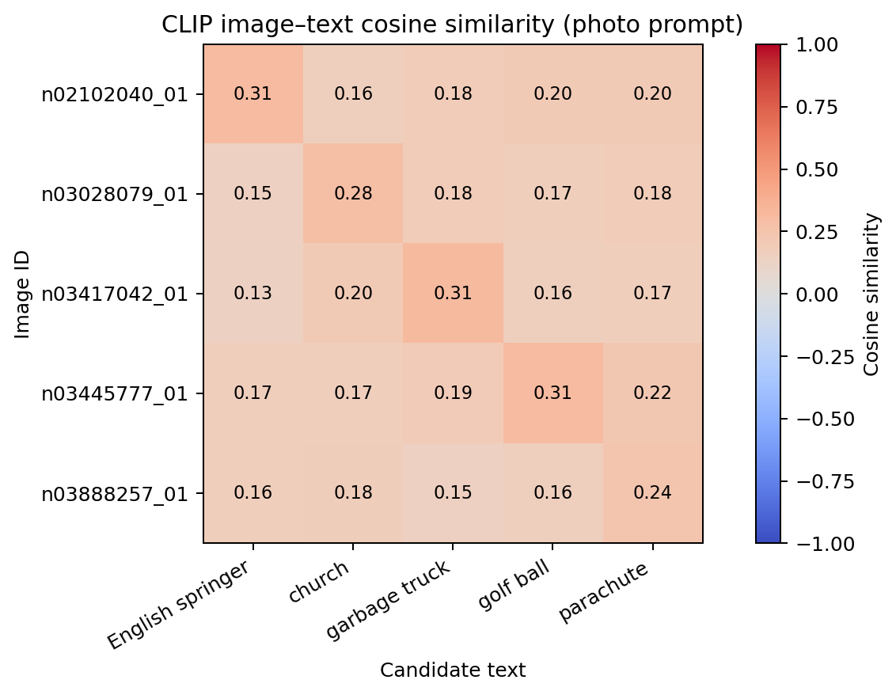
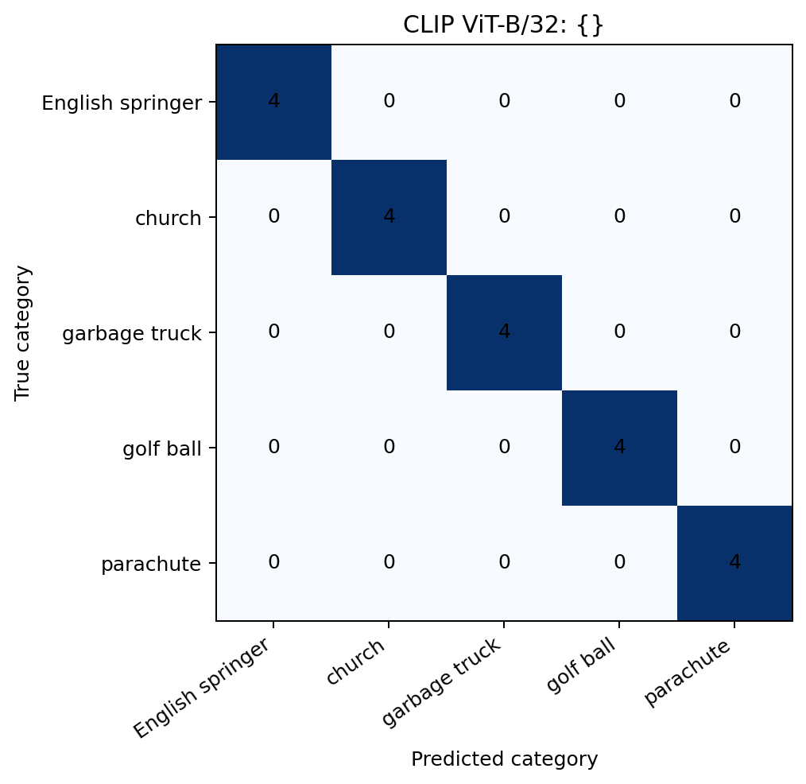
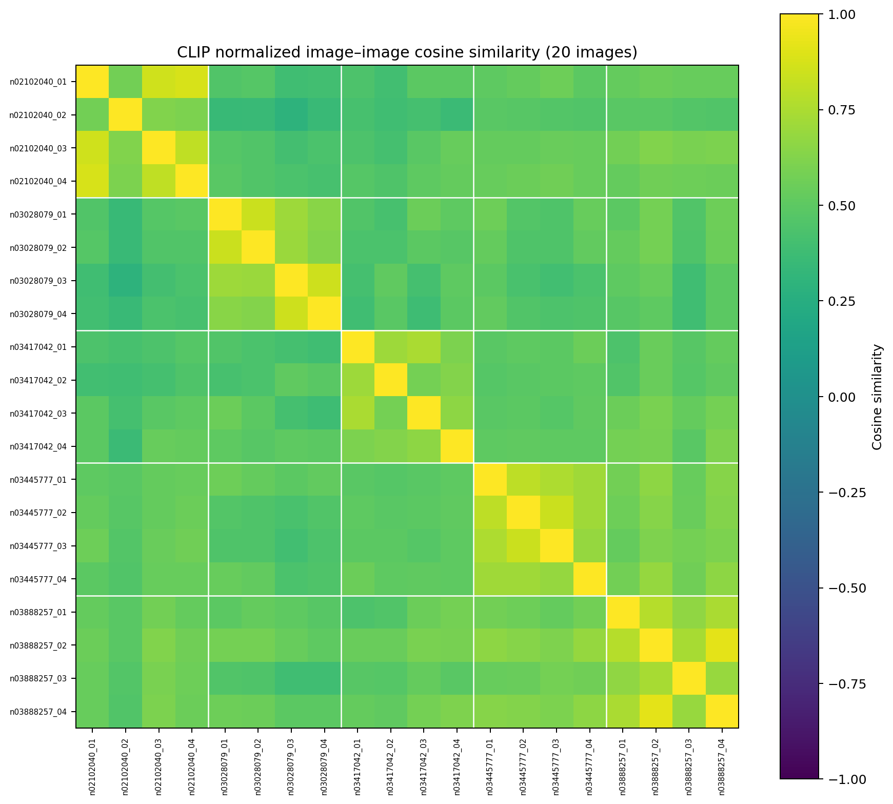

1. Introduction
I used two pretrained models on the same small collection of images to see what they predict, where they make mistakes, and how changing text prompts affects image–text matching. I did not train or fine-tune either model.
| Measurement | Result |
|---|---|
| Images evaluated | 20 images, 5 classes (4 per class) |
| ViT-B/16 top-one accuracy | 17/20 (85%) |
| CLIP ViT-B/32 top-one accuracy | 20/20 (100%) for each of the 3 prompts |
| CLIP label changes between prompts | 0 |
ViT correctly classified 17 images out of 20 among its 1,000 predefined ImageNet classes. CLIP matched all 20 images to their correct class when given only five candidate category descriptions. This is a comparison of different tasks, not proof that one architecture is universally more accurate.
2. Dataset and Method
I used the fast.ai Imagenette 160 validation split, which is derived from ImageNet. Before checking model outputs, I chose five of its categories and sampled four images from each using seed 42 after sorting the filenames. Parts 1 and 2 separately re-created the same 20-image selection; I checked that their SHA-256 hashes agreed for every file.
| Category | WordNet synset | ImageNet class index (0-based) | Count |
|---|---|---|---|
| English springer | n02102040 | 217 | 4 |
| church | n03028079 | 497 | 4 |
| garbage truck | n03417042 | 569 | 4 |
| golf ball | n03445777 | 574 | 4 |
| parachute | n03888257 | 701 | 4 |
Vision Transformer · ViT-B/16
Weights: ViT_B_16_Weights.IMAGENET1K_V1
Preprocess: checkpoint-supplied resize 256, center crop 224, RGB normalization with ImageNet mean/std; batch size 4.
OpenAI CLIP · ViT-B/32
Checkpoint: ViT-B/32
Preprocess: checkpoint-supplied 224-pixel bicubic resize/crop and CLIP-specific normalization; batch size 4.
Runtime: Google Colab, NVIDIA L4 CUDA runtime; Linux / Python 3.13.16; PyTorch 2.11.0+cu130; torchvision 0.26.0+cu130; NumPy 2.1.3; pandas 2.2.3; Pillow 11.3.0; matplotlib 3.10.0; OpenAI CLIP package 1.0. Both notebooks log preprocessing and device information.
3. Part 1: Vision Transformer
1. Image patches and input tokens
For a 224 × 224 input image, a 16 × 16 patch size produces 14 × 14 = 196 non-overlapping patches. Adding the classification token creates a sequence of 197 tokens.

The ViT patch-projection layer converts each flattened pixel patch into a learned vector. Positional embeddings add location information, so the Transformer can distinguish where the patches came from. The CLS token is a separate learned input token whose final representation is used by the classification head for the image-level prediction.
2. Classification results
Using the checkpoint's preprocessing, ViT predicted across all 1,000 ImageNet labels. It got 17/20 correct (85%). The confusion matrix includes an “Other ImageNet class” column so misclassifications outside our chosen five classes are not hidden.

Success: garbage truck #3
Image n03417042_03 was correctly identified as garbage truck with a top-one probability of 90.2%. The object is a distinctive truck viewed on a road.
Success: parachute #4
Image n03888257_04 was correctly identified as parachute with 91.7%. It shows a canopy against a relatively uncluttered sky.
Error: church #3 → monastery
Image n03028079_03 shows a decorated religious building facade, but ViT predicted monastery (77.7%) rather than church, which came second (11.1%). Related building categories can overlap visually.
Error: garbage truck #4 → trailer truck
Image n03417042_04 shows a heavy vehicle from the back, with equipment on it. ViT chose trailer truck (65.1%); garbage truck ranked fifth (0.4%). The usual garbage-collection cues are not obvious from this view.
The third error was n03028079_04 (church), predicted as palace (47.2%); monastery was second (29.9%). The grand facade and tower may be part of why the model considered those architectural labels. These are possible visual explanations, not causal proof.
4. Part 2: CLIP
1. Implementing cosine similarity and logits
I encoded every image and each category prompt with CLIP, divided each embedding by its L2 norm, then multiplied the normalized vectors to obtain cosine similarity. Next, I multiplied the similarities by CLIP's learned scale and applied softmax across the five candidate texts.
The checkpoint's learned logit scale evaluated to 100.0. Comparing my manually computed logits against the model's built-in image–text logits produced a maximum absolute difference of 0.02095 on the four tested images. They agreed closely; small numerical differences can arise from the precision used in the GPU calculations.

Cosine similarity describes vector alignment before scaling. Logits scale those comparisons for softmax. Softmax values express the model's relative preference among the five texts supplied; they are not independently calibrated probabilities that an object is present. Adding or replacing candidate texts changes the denominator, and can change the probabilities even for unchanged image and text embeddings.
2. Prompt wording comparison
I used three prompt templates with the same five categories and exactly the same frozen CLIP weights. All three templates classified 20/20 images correctly. No predicted category changed, but the confidence scores did.
| Prompt template | Correct | Top-one accuracy | Category changed? |
|---|---|---|---|
{category} | 20 / 20 | 100% | No |
a photo of a {category} | 20 / 20 | 100% | No |
an image showing a {category} | 20 / 20 | 100% | No |

All three confusion matrices are identical: four correct predictions for each category, with no off-diagonal errors.
The most noticeable change was on golf ball #4 (n03445777_04): a large, round white object pictured against the sky. Its correct-class softmax score fell as the wording became more descriptive, even though the predicted class stayed the same.
Golf ball #4 · probability assigned to correct class
For parachute #1, the correct-class score instead increased from 98.75% to 99.70% and then 99.95%. That shows wording does not have one uniform effect. Changing a prompt changes the input text embedding, whereas fine-tuning updates the model's learned parameters; I did not fine-tune.
3. CLIP image representation
Using only normalized CLIP image embeddings, I computed a 20 × 20 image–image cosine matrix and grouped the images by their five known categories. Similarities within a category averaged 0.722, compared with 0.499 for pairs from different categories.

Similar within a class · 0.917
Parachute images n03888257_02 and n03888257_04 have cosine similarity 0.917, the strongest distinct-image pair in this sample. Both have parachute canopies prominently placed in blue-sky scenes.
Unexpected cross-class pair · 0.685
Golf ball n03445777_04 and parachute n03888257_02 have similarity 0.685 despite different labels. Both include a large bright rounded/airborne shape against a blue sky, which may make their visual context similar.
The least-similar same-category pair I found was English springer #1 versus #2, at 0.576. The first is a tight close-up of a dog's face; the second is a more distant indoor dog-show scene. This suggests object scale, viewpoint, background, and color can contribute alongside category identity. Similarity alone cannot establish which visual feature caused the score.
5. Discussion and Conclusion
My main result is that both pretrained systems recognized most or all of the main object categories in this small set. ViT's three mistakes were on visually related ImageNet labels (church, monastery, palace; and truck types). CLIP did perfectly with the five supplied candidate categories, but its relative scores were sometimes strongly influenced by prompt wording.
The CLIP embedding matrix showed a general same-class similarity pattern while also revealing that shared background and shape might connect otherwise different categories. This supports the idea that the representation carries semantic object information together with other visual cues; these observations alone do not show which cues the model relies on causally.
Sources and implementation
Dataset: fast.ai Imagenette · Imagenette 160 archive.
Vision model: torchvision ViT-B/16 (IMAGENET1K_V1).
Vision–language model: OpenAI CLIP (ViT-B/32).
Code notebooks and reproducibility manifests are submitted privately with the course assignment; the public website intentionally contains report assets only.
Appendix A: ViT Top-Five Predictions
These are the exact top-five ImageNet predictions from Part 1, in descending order. Probabilities are softmax scores over all 1,000 ImageNet categories. Image IDs and source filenames are recorded in the saved experiment manifest.
| Image ID | True class | Top-1 class | Top-1 % | Top-five predictions (descending) |
|---|---|---|---|---|
| n02102040_01 | English springer | English springer | 77.4% | English springer (77.4%); Brittany spaniel (5.9%); Welsh springer spaniel (1.8%); Sussex spaniel (0.5%); clumber (0.5%) |
| n02102040_02 | English springer | English springer | 62.6% | English springer (62.6%); Sussex spaniel (13.1%); Welsh springer spaniel (7.9%); Cardigan (1.8%); German short-haired pointer (1.2%) |
| n02102040_03 | English springer | English springer | 74.2% | English springer (74.2%); Japanese spaniel (2.4%); Sussex spaniel (1.6%); Welsh springer spaniel (1.3%); cocker spaniel (1.2%) |
| n02102040_04 | English springer | English springer | 78.8% | English springer (78.8%); Welsh springer spaniel (2.0%); Brittany spaniel (1.4%); Sussex spaniel (1.0%); German short-haired pointer (0.3%) |
| n03028079_01 | church | church | 74.6% | church (74.6%); monastery (5.7%); bell cote (3.2%); beacon (0.3%); barn (0.1%) |
| n03028079_02 | church | church | 67.0% | church (67.0%); bell cote (4.3%); solar dish (2.1%); monastery (1.2%); alp (0.8%) |
| n03028079_03 | church | monastery | 77.7% | monastery (77.7%); church (11.1%); bell cote (0.4%); vault (0.2%); palace (0.2%) |
| n03028079_04 | church | palace | 47.2% | palace (47.2%); monastery (29.9%); bell cote (2.0%); triumphal arch (1.8%); obelisk (1.5%) |
| n03417042_01 | garbage truck | garbage truck | 89.2% | garbage truck (89.2%); trailer truck (0.3%); thresher (0.2%); tow truck (0.1%); moving van (0.1%) |
| n03417042_02 | garbage truck | garbage truck | 85.3% | garbage truck (85.3%); ashcan (0.2%); mosque (0.1%); jinrikisha (0.1%); street sign (0.1%) |
| n03417042_03 | garbage truck | garbage truck | 90.2% | garbage truck (90.2%); trailer truck (0.8%); car mirror (0.6%); moving van (0.3%); bicycle-built-for-two (0.1%) |
| n03417042_04 | garbage truck | trailer truck | 65.1% | trailer truck (65.1%); moving van (17.0%); tow truck (1.3%); crane (0.4%); garbage truck (0.4%) |
| n03445777_01 | golf ball | golf ball | 89.3% | golf ball (89.3%); red-breasted merganser (0.1%); ping-pong ball (0.1%); baseball (0.1%); soccer ball (0.1%) |
| n03445777_02 | golf ball | golf ball | 80.3% | golf ball (80.3%); loupe (0.1%); goblet (0.1%); thimble (0.1%); chocolate sauce (0.1%) |
| n03445777_03 | golf ball | golf ball | 89.0% | golf ball (89.0%); ping-pong ball (0.2%); tennis ball (0.2%); confectionery (0.0%); baseball (0.0%) |
| n03445777_04 | golf ball | golf ball | 88.8% | golf ball (88.8%); ping-pong ball (0.3%); water tower (0.2%); plunger (0.1%); wooden spoon (0.1%) |
| n03888257_01 | parachute | parachute | 92.3% | parachute (92.3%); bobsled (0.5%); stretcher (0.4%); ski (0.3%); ski mask (0.3%) |
| n03888257_02 | parachute | parachute | 87.1% | parachute (87.1%); balloon (1.4%); airship (0.1%); llama (0.1%); umbrella (0.1%) |
| n03888257_03 | parachute | parachute | 76.9% | parachute (76.9%); tiger shark (6.2%); great white shark (2.5%); hammerhead (0.4%); grey whale (0.3%) |
| n03888257_04 | parachute | parachute | 91.7% | parachute (91.7%); balloon (0.2%); airship (0.1%); seashore (0.0%); flagpole (0.0%) |